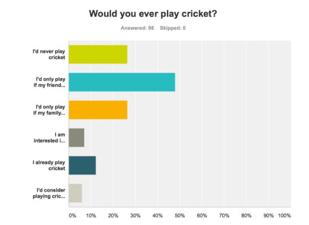

Creative Brief and Message Strategy
What are we doing?
We are developing an integrated media campaign for Cricket Australia’s Women’s Big Bash League (WBBL) using TV, print, outdoor, social media, and mobile apps to reach our target audience on multiple platforms.
What does success look like?
Success is based on the accomplishment of three advertising objectives, which are to increase awareness of the WBBL as a standalone product, drive viewership of WBBL games, and increase participation to inspire the next generation of players.
What is the key message?
Due to our target audience of “young families” having two components, the parents and their children, we developed a two-part message that concerns each part of the audience and the associated advertising objectives. First, we want to show parents that WBBL is a unique spectator sports experience to be shared with their children, by attending the games or by viewing on TV, and second, that WBBL’s feminine aspect is a relatable pathway for their daughters to become involved in cricket at a young age.
This message will be supported by the slogan of “Share the moments.” Although it does not directly address the family and feminine aspects of the first and second parts of the message respectively, it will help to emphasize the idea that WBBL is best enjoyed as a group. The family and feminine aspects will be addressed indirectly through the imagery used in the campaign across different media. The slogan is simple and not heavy-handed, allowing for the advertising’s imagery to speak for itself and convey the message.
This message will be supported by the slogan of “Share the moments.” Although it does not directly address the family and feminine aspects of the first and second parts of the message respectively, it will help to emphasize the idea that WBBL is best enjoyed as a group. The family and feminine aspects will be addressed indirectly through the imagery used in the campaign across different media. The slogan is simple and not heavy-handed, allowing for the advertising’s imagery to speak for itself and convey the message.
What characteristics of the audience are we targeting?
Parent's greater willingness to experience cricket together as a family is being targeted. According to our customer analysis survey, there is very little interest in watching any form of cricket, not just the WBBL, as more than half of respondents claim to never watch the sport.

However, a quarter of the survey respondents would play cricket if their families played and almost half would play if their friends played.

When compared to the quarter of respondents who would never play, there appears a clear link influencing an individual’s involvement with cricket; individual involvement with the sport is dependent on the concurrent involvement by friends or family. This customer attitude can be applied to our target audience in that parents would be more willing to watch and participate in cricket if it is an enjoyable experience that their children could also partake in and find enjoyable.
An additional characteristic of the audience that is being targeted is that of children’s already high participation rate, more than half according to the ABS, in extracurricular sports. Such high participation means that the campaign does not have to necessarily focus on using a strong message to encourage young girls’ involvement with sports in the first place, but can use the subtler message of feminine relatability to guide their sports participation towards cricket.
How are we framing the message?
The message will be framed in a way that highlights the family experience of attending or viewing WBBL games rather than the sport itself. The cricket being played is not what can drive additional awareness, viewership, and participation from the audience but rather how a family experiences the sport and those moments they share. That experience will be show as distinctly more relaxed and family friendly compared to the intensity often portrayed by advertising for the BBL, helping to differentiate the WBBL as a standalone product.
An additional differentiating aspect of the WBBL is that, obviously, the cricket is played by women. While the second part of the message is based on this fact, the feminine aspect of the league will be framed more indirectly through imagery that puts an emphasis on families with daughters, implying the young girls’ relatability to female cricket players.
An additional differentiating aspect of the WBBL is that, obviously, the cricket is played by women. While the second part of the message is based on this fact, the feminine aspect of the league will be framed more indirectly through imagery that puts an emphasis on families with daughters, implying the young girls’ relatability to female cricket players.
How does the message appeal to the audience?
Both parts of the message are based on emotion to appeal to and influence the audience. Involvement with a spectator sport offers only intangible benefits, which are seen as desirable to an audience member’s emotional wants and needs. The message appeals to how parents always want positive experiences for their children and for those experiences to be enjoyable. But the situation is ideal if the parents find the experience enjoyable as well, (i.e. Pixar movies).
The message also appeals to parent's daughters based on their tendency of greater ability to relate to and connect with female players as well as the advertising imagery’s emphasis on young girls’ involvement, thus, encouraging participation in cricket as they can now better identify with who plays it.